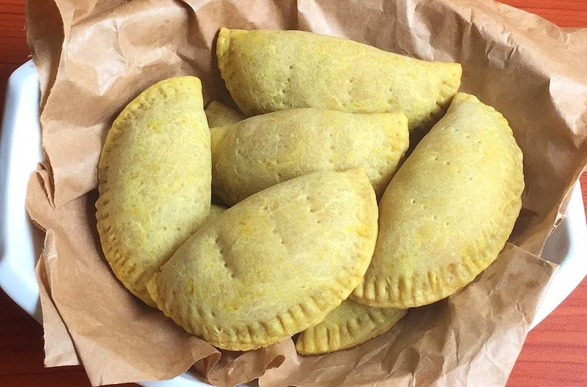

Nigerian Fish Pie
Description
Nigerian fish pie is an alternative to the quintessential party snack known as meat pie. However, I must say I prefer the rich umami flavor that a fish pie offers. Unlike the traditional British fish pie, which is typically baked, the Nigerian fish pie is deep-fried dough filled with fish, such as mackerel or sardines, along with various spices and vegetables.
Ingredients
Filling Ingredients
- 2 Cans of Sardines
- 2 Tablespoons Vegetable Oil
- 2 Teaspoons Dried Thyme
- 1 Medium Onion
- 3 Large Carrots
- 3 Large Potatoes
- 1/2 Fish Stock Cube
Dough Ingredients
- 3 Cups of All Purpose Flour
- 1/4 Teaspoon Salt
- 1 Egg
- 200 Grams Butter
- 1 Cup of Milk
- 1 egg for basting
Steps
- Mix the salt and flour in a bowl.
- Add the butter and egg. Then mix wth your hands and add the milk in increments as you mix. .
- Once mixed, divided into two dough balls and store one-half in the fridge for 30 minutes.
- Chop and dice the vegetables for filling.
- Stir fry with seasoning till fragrant before adding the Sardines.
- Leave to simmer till vegetables are cooked. Stir well until fish is properly crushed.
- Taste and turn off the heat.
- Next, bring out the dough from the fridge and roll out with a rolling pin.
- Cut into round shapes (discs) with an empanada mould, meat pie cutter or a small cup or plate or any round object.
- Brush with egg white.
- Scoop the filling in the cut dough and seal.
- Place on a lightly grased baking pan.
- Preheat your oven for 20 minutes at 400F (200C) for medium sized pies and 375F (190F) for smaller pies.
- Brush your sealed dough with the egg white and place in a pre-heated oven.
- Bake till brown. Once brown, that's it. Your crunchy Nigerian fish pie is ready.